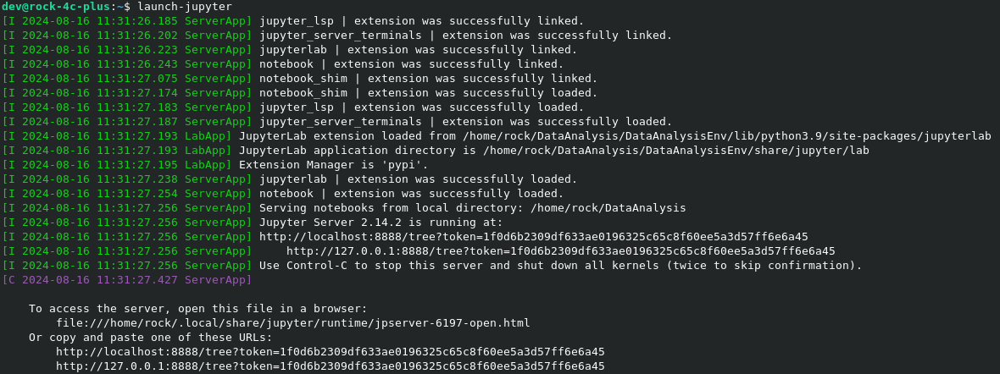
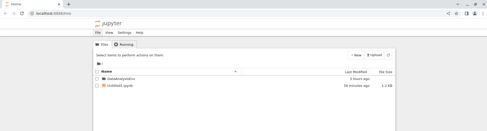
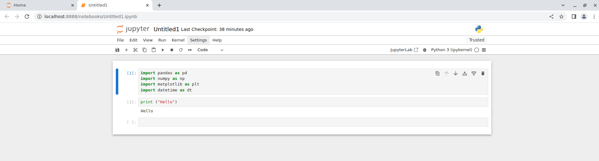
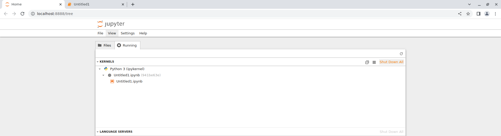
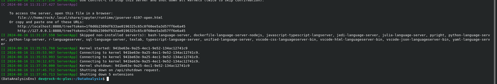

Data Analysis
Introduction to Data Analysis/ Visualisation
Learning outcomes:
- Identify fundamental concepts related to data analysis/visualisation.
- Apply visualisation tools and techniques to obtain insight from datasets.
Topics to be covered:
- Introducing some popular libraries for data analysis/visual such as matplotlib, pandas.
- Basic skills of processing time series data.
- Visualise time series data with line graphs
- identify and visualise correlation between data columns with scatter plots and heatmaps.
- A hands-on visual task for students to complete.
Introduction to time series forecasting
Learning outcomes:
- Understand basic concepts about time series forecasting.
- Able to use past data to make predictions about future outcomes.
Topics to be covered:
-
Basic concepts of time series forecasting
-
Popular methods of time series data forecasting.
-
Evaluation of time series forecasting.
-
A hands-on prediction task for students to complete.
Jupyter Notebook
- We will be using Jupyter Notebook to:
-
Use the pre-made alias:
$ launch-jupyter & -
or explicity run each command manually:
$ cd ~/DataAnalysis $ source DataAnalysisEnv/bin/activate $ jupyter notebook & -
either way you should see the following output in the terminal:

-
Should auto launch chrome and you will be greeted with the following page:

Note:
-
If not you can go to the browser URL and type the address shown in the terminal
-
Locate the line
To access the server, open this in a a browser:file:///home/rock/.local/share/jupyter/runtime/jpserver-6197-open.html- Also,
/jpserver-####-open.htmlwill be unique to you.
-
-
A default notebook is present called
Untitled1.ipynb, double clicking it should launch the folllwing:
-
You can check the running kernel by going back to the orginal host tab and clikcing
Runningto confirm thePython 3 (ipykernel)is running like below:
-
You can shutdown the jupyter notebook from File and Shutdown, if successful the terminal will display:
